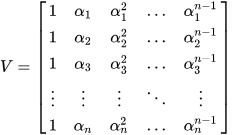
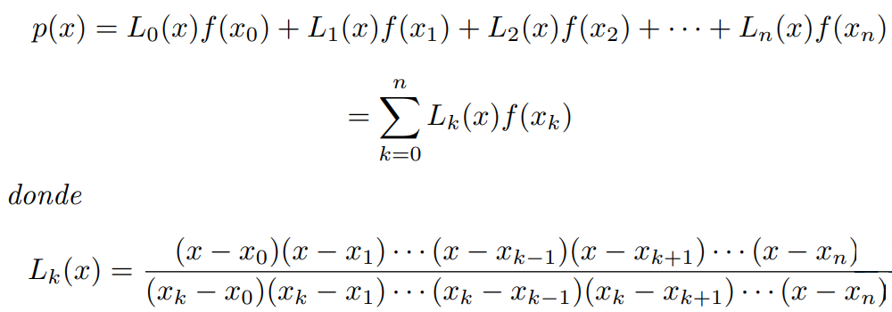

Métodos Disponibles:
- Método de Bisección
- Método de Regla falsa
- Método de Punto fijo

- Método de Newton
- Método de Secante
- Método de Raíces múltiples
Métodos Disponibles:
- Método de Jacobi
- Método de Gauss-Seidel
- Método SOR
Métodos
Disponibles:
- Método de Vandermonde 
- Método de Newton
Interpolante - Método de Lagrange 
- Método de Spline Lineal
- Método de Spline Cubico